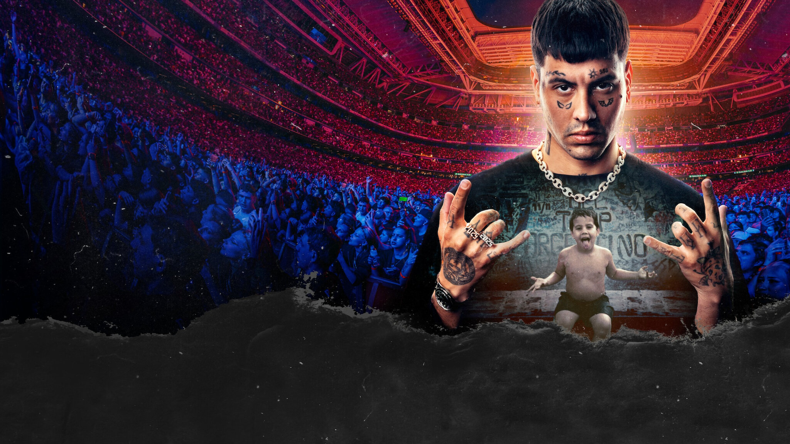

Mauro Lombardo se hizo conocido en El Quinto Escalón, la mítica competición de freestyle callejera en Buenos Aires. Su victoria en 2016 en esta competicion y con el lanzamiento de su primer tema "No Vendo Trap" marcó el inicio de la explosión del género urbano en Argentina.
Es considerado el líder del movimiento urbano argentino y fue uno de los primeros en dejar las batallas para dedicarse de lleno a la música, abriendo el camino para toda una generación (Bizarrap, Nicki Nicole, Tiago PZK).
Se convirtió en el primer artista urbano argentino en llenar el estadio Santiago Bernabéu en Madrid y múltiples estadios River Plate en Buenos Aires convirtiendose asi en una leyenda dentro de la cultura musical argentina.
En resumen: Duki pasó de rapear en una plaza por una inscripción de unos pocos pesos a ser la cara global del trap argentino.
| Álbum |
|---|
| Super Sangre Joven |
| Desde el Fin del Mundo |
| Temporada de Reguetón 1 |
| Temporada de Reguetón 2 |
| Ameri |